Building blocks of an energyRt model
The new*() constructors, and the system around them
1 · The bricks
The vocabulary
An energyRt model is a set of objects, each built by a new*() function.
Commodities — the things that flow
newCommodity()
Processes — the things that move or transform them
newSupply(),newImport(),newExport()newDemand()newTechnology()newStorage(),newTrade()
Containers — how they are assembled
newRepository()— a bag of objectsnewHorizon()— the yearsnewModel()— objects + regions + horizon
Policy (later chapters)
newConstraint(),newTax(),newSubsidy()
Every process can be drawn: draw(obj) sketches its flows. We use it on every slide from here on.
One grammar, everywhere
Every constructor follows the same shape:
newTechnology(
name = "ECOA", # the set element -- UPPERCASE, no spaces
desc = "Coal power plant", # free text
input = list(comm = "COA"), # what it consumes
output = list(comm = "ELC"), # what it produces
ceff = data.frame(comm = "COA", cinp2use = 0.4), # parameters
region = character() # empty = every region
)nameis the identifier the solver sees.- Parameters are
data.frames, and may carryregion,year,slicecolumns. Leave a column out and the value applies to all of them. - Values between given years are interpolated — you supply anchors, not a full grid.
newCommodity() — what flows
A commodity is a label with a unit. It has no diagram: it is the thing that travels along the arrows, not a box.
timeframe— the finest resolution at which this commodity balances.ANNUALpools the year;HOURforces hourly balancing.emis— emission factors travel with the fuel, so every technology that burns it inherits them (givencombustion = 1on the input).
newSupply() — a domestic resource
newDemand() — what must be served
newImport() — a flow from outside
newTechnology() — the converter
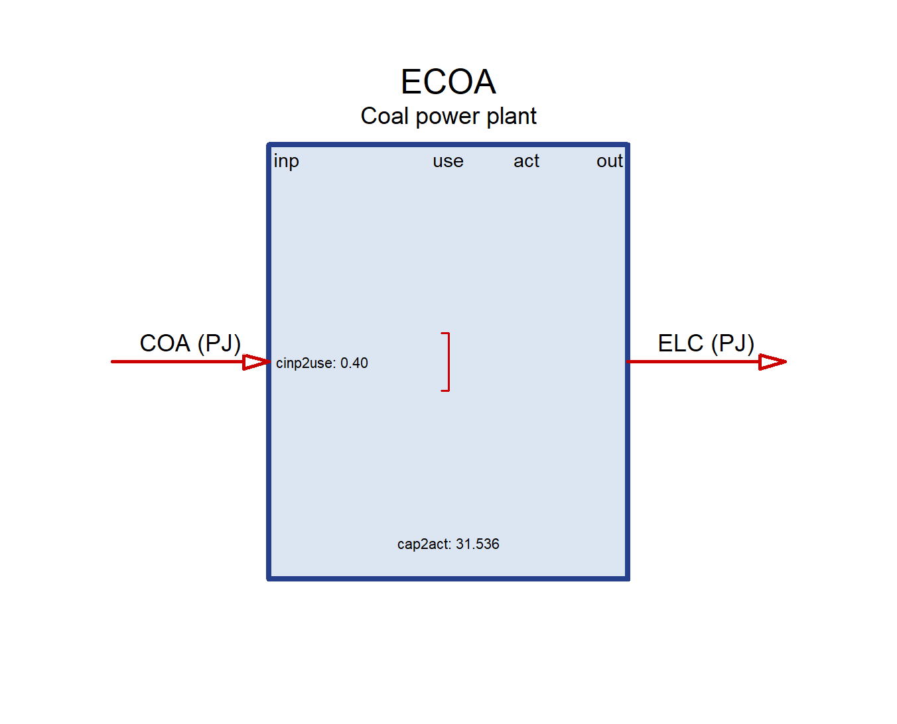
Read the diagram left to right: inp → use → act → out.
The five stages
Every technology has the same internal chain. Each arrow is a coefficient:
| Stage | Meaning | Coefficient |
|---|---|---|
inp |
commodity entering | — |
ginp |
grouped input, if declared | cinp2ginp |
use |
what the process actually consumes | cinp2use, ginp2use |
act |
activity — the capacity-linked variable | use2cact |
out |
commodity leaving | cact2cout |
cap2actconverts capacity into annual activity (1 GW × 8760 h = 31.536 PJ).- Give one efficiency coefficient and the rest default to 1 — that is why
cinp2use = 0.40alone describes a 40 % plant.
Grouped input: co-firing
Two fuels feeding one boiler. The group is the thing with an efficiency; the members compete for share within it.
ECOFIRE <- newTechnology(
name = "ECOFIRE",
input = list(comm = c("COA", "BIO"),
unit = c("PJ", "PJ"),
group = c("FUEL", "FUEL"),
combustion = c(1, 1)),
output = list(comm = "ELC", unit = "PJ"),
group = data.frame(group = "FUEL",
desc = "Boiler fuel", unit = "PJ"),
geff = data.frame(group = "FUEL",
ginp2use = 0.38),
ceff = data.frame(comm = c("COA", "BIO"),
cinp2ginp = c(1, 1),
share.up = c(1, 0.30)),
cap2act = 31.536, olife = 30L
)
Grouped input: what the picture tells you
- The
ginpcolumn appears — it is absent for a single-fuel technology. FUELis a node: both fuels flow into it, and it carries the efficiency (ginp2use: 0.38).[0, 0.30]next to BIO is the share bound: biomass may supply at most 30 % of the boiler’s fuel.[0, 1]next to COA: coal may supply all of it.
. . .
Why group at all? Without a group each fuel would need its own efficiency and could not be constrained relative to the other. Shares are the point.
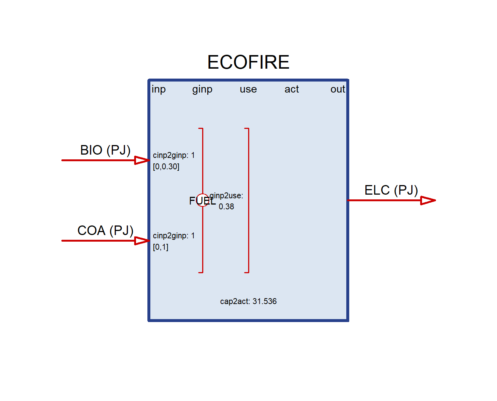
Multiple outputs: CHP
One activity, two products. cact2cout sets how much of each comes out per unit of activity.
ECHP <- newTechnology(
name = "ECHP",
desc = "Gas CHP: power and heat",
input = list(comm = "GAS", unit = "PJ",
combustion = 1),
output = list(comm = c("ELC", "HEA"),
unit = c("PJ", "PJ")),
ceff = data.frame(
comm = c("ELC", "HEA"),
cact2cout = c(1, 1.2) # heat/power ratio
),
cap2act = 31.536, olife = 25L
)Fixing both makes the ratio rigid; bound them instead for a flexible CHP.
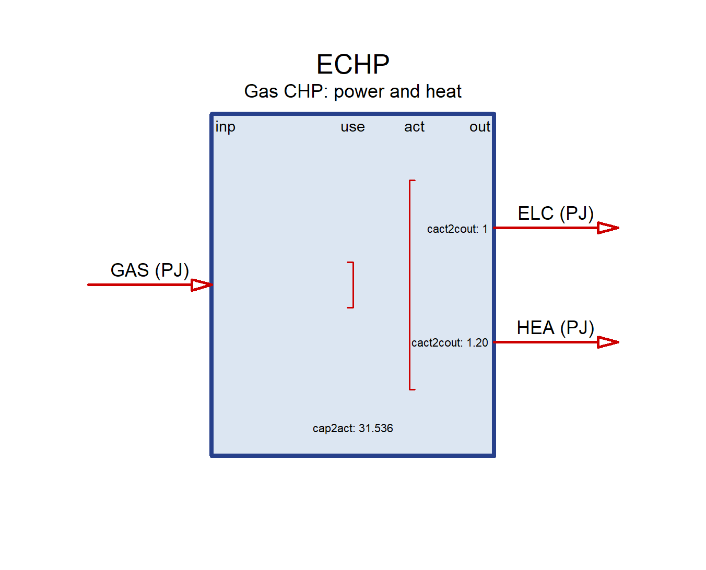
Auxiliary commodities
Main commodities (red) are tied to capacity and activity. Auxiliary commodities (blue) are anything else the process consumes or emits — land, water, steel, labour, pollutants.
They are declared in aux, and linked in aeff by choosing which quantity they scale with:
| Coefficient | Scales with |
|---|---|
cinp2ainp, cinp2aout |
main commodity input |
cout2ainp, cout2aout |
main commodity output |
act2ainp, act2aout |
activity |
cap2ainp, cap2aout |
installed capacity |
ncap2ainp, ncap2aout |
new capacity (built this year) |
…ainp = the process consumes it, …aout = the process produces it.
Aux linked to capacity, activity, new capacity
ENUC <- newTechnology(
name = "ENUC",
desc = "Nuclear: land, water, steel",
input = list(comm = "NUC", unit = "PJ"),
output = list(comm = "ELC", unit = "PJ"),
aux = data.frame(
acomm = c("LAND", "WAT", "STEEL"),
unit = c("km2", "Mm3", "kt")),
aeff = data.frame(
acomm = c("LAND", "WAT", "STEEL"),
cap2ainp = c(0.5, NA, NA), # per GW held
act2ainp = c(NA, 0.02, NA), # per PJ made
ncap2ainp = c(NA, NA, 40) # per GW built
),
ceff = data.frame(comm = "NUC", cinp2use = 0.35),
cap2act = 31.536, olife = 50L
)
Why the distinction matters
Three physically different things, and the diagram labels each one:
cap2ainp: 0.50— land is occupied for as long as the plant stands, whether or not it runs.act2ainp: 0.02— cooling water is drawn only when it generates.ncap2ainp: 40.00— steel is consumed once, in the year the plant is built.
. . .
Pick the wrong one and the model is quietly wrong: steel on cap2ainp would re-buy the whole plant every year.
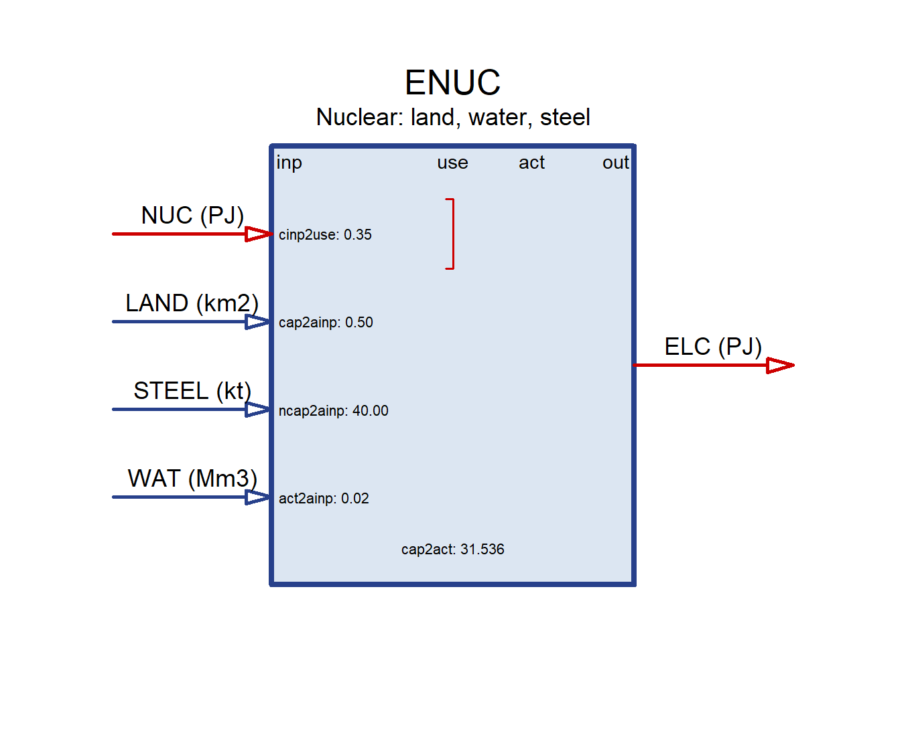
Aux as emissions
Pollutants that depend on the plant, not only the fuel, are auxiliary outputs scaled by fuel input:
ECOA_E <- newTechnology(
name = "ECOA_E",
desc = "Coal plant with NOx and SOx",
input = list(comm = "COA", unit = "PJ",
combustion = 1),
output = list(comm = "ELC", unit = "PJ"),
aux = data.frame(acomm = c("NOX", "SOX"),
unit = c("kt", "kt")),
aeff = data.frame(acomm = c("NOX", "SOX"),
comm = "COA",
cinp2aout = c(0.30, 0.45)),
ceff = data.frame(comm = "COA", cinp2use = 0.40),
cap2act = 31.536, olife = 30L
)Contrast with CO2, which sits on the commodity — every burner inherits it.
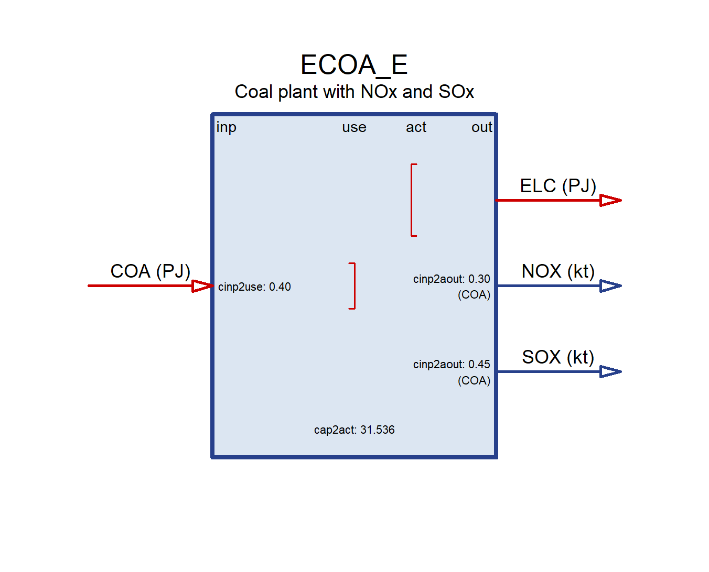
newStorage() — moving energy in time
seff— charge / discharge efficiency, andstgefffor standing losses.cap2stg— how many hours of storage one unit of capacity buys.- Only meaningful with sub-annual slices — see the Time and storage chapter.
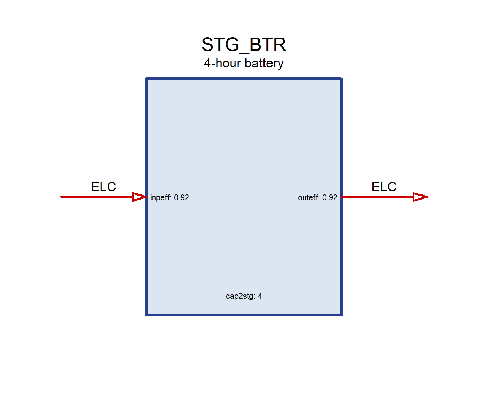
newTrade() — moving energy in space
TBD_ELC <- newTrade(
name = "TBD_ELC",
desc = "Interregional power line",
commodity = "ELC",
routes = data.frame( # which links exist
src = c("R1", "R2"),
dst = c("R2", "R1")
),
trade = data.frame( # their parameters
src = c("R1", "R2"),
dst = c("R2", "R1"),
teff = 0.95 # line losses
),
invcost = list(invcost = 1500)
)Two slots, two jobs: routes declares the links, trade parameterises them. One is not derived from the other — a route with no parameters is unconstrained, and parameters for an undeclared route are ignored.
Trade is directional, so a bidirectional line is two rows in each. Note it has no region — the regions are src and dst.
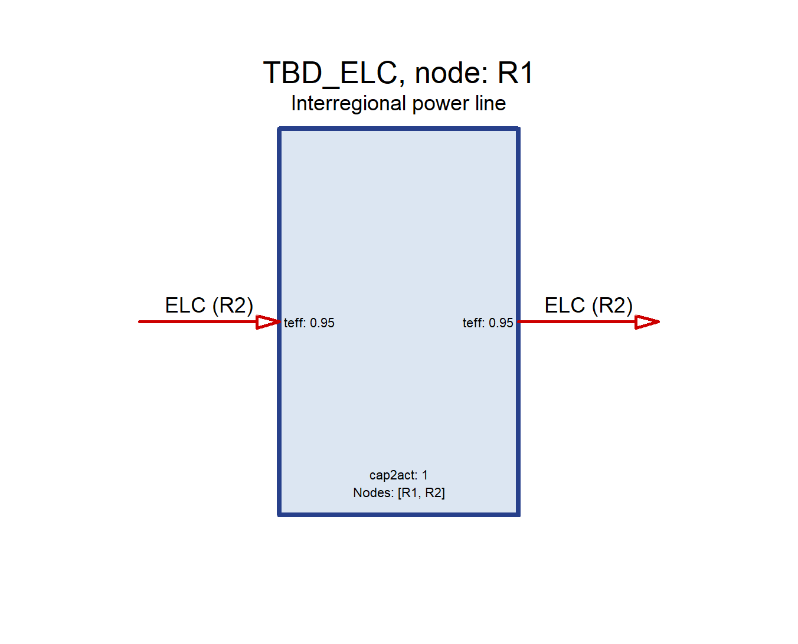
newRepository() — the bag
A repository is an ordered collection of objects. It has no behaviour of its own; it exists so a model can be assembled from named parts.
class: repository objects: 8 - Repositories can be combined and passed around, so a scenario is “base repo + a few replacements”.
add()/update()return a modified copy — nothing is mutated in place.
newHorizon() and newModel()
region— the model’s regions; objects with noregionapply to all.horizon— milestone years. Periods grow, so the near term is resolved finely and the far term cheaply.- The model is still just a description.
interpolate_model()expands it over regions × years × slices;solve_scenario()solves it.
Putting it together
| Function | Makes | Drawn? | Key arguments |
|---|---|---|---|
newCommodity() |
a flow | — | unit, timeframe, emis |
newSupply() |
a resource | ✔ | supply: cost, ava.up |
newDemand() |
an obligation | ✔ | demand |
newImport() / newExport() |
rest-of-world flow | ✔ | price, imp.up / exp.up |
newTechnology() |
a converter | ✔ | input, output, ceff, aeff, invcost |
newStorage() |
time shifting | ✔ | seff, cap2stg |
newTrade() |
space shifting | ✔ | routes, then trade: src, dst, teff |
newRepository() |
a bag of objects | — | name, ... |
newModel() |
the description | — | data, region, horizon |
When in doubt, draw() it. If the picture is not the system you meant, the model is not either.
2 · Where objects live: time
Calendars: the time structure
A calendar declares the sub-annual structure every flow is balanced on. It is a set of nested timeframes, each split into slices carrying a share of the year.
ANNUAL SEASON DAYNITE slice share weight
<char> <char> <char> <char> <num> <num>
1: ANNUAL FA D FA_D 0.125 1
2: ANNUAL FA N FA_N 0.125 1
3: ANNUAL SP D SP_D 0.125 1
4: ANNUAL SP N SP_N 0.125 1- Nesting is the grammar:
SEASONaboveDAYNITEgives 8 slices. - Every parent timeframe currently needs the same number of children — a regular tree, not a ragged one.
newCalendar(name, timetable, year_fraction)turns a timetable into an object.
Ready-made calendars
Eight ship with the package — the fastest way to change a model’s time resolution is to swap one in.
[1] "season_dn" "d365"
[3] "utopia_annual" "utopia_seasons"
[5] "utopia_s4h24" "utopia_m12h24"
[7] "d365_h24" "d365_h24_subset_1day_per_month"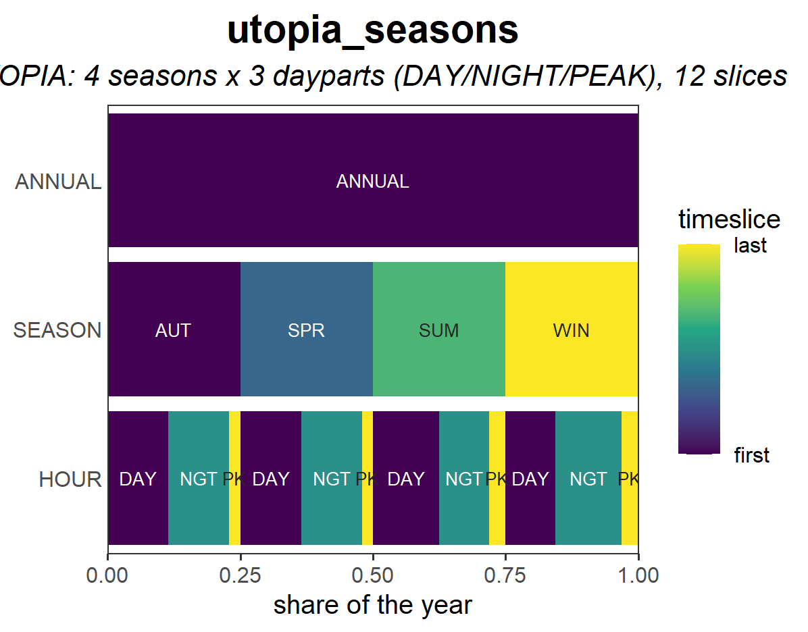
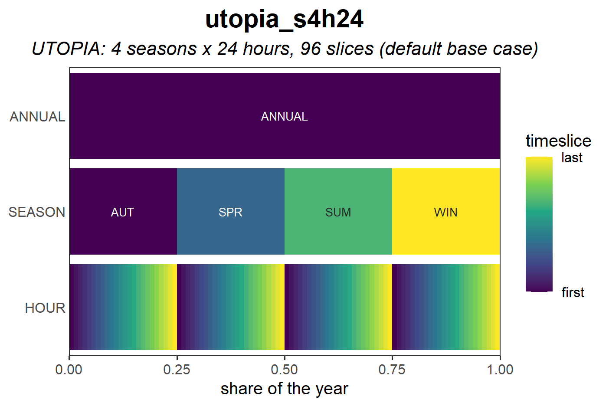
Each rectangle is one slice, sized by its share of the year. ANNUAL sits on top; finer timeframes stack below.
Sampled vs full calendars
A sampled calendar keeps a representative subset of slices and declares what fraction of the year it covers:
slices year_fraction
sampled 288 0.0329
full 8760 1.0000One day per month at hourly resolution — 288 slices instead of 8760, about 3.3 % of the year.
year_fraction is what keeps annual quantities honest when only part of the year is modelled.
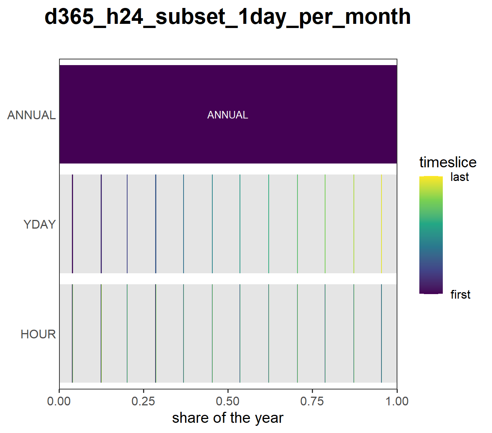
Passing reference = lays out the full structure and fills only the slices the sampled calendar declares.
Aggregating time in results
Sampling reduces what is solved. Aggregation changes what you read back — getData() takes a timeframe argument:
timeframe = |
Returns |
|---|---|
"lowest" (default) |
flows summed up to the coarsest level, normally ANNUAL |
"highest" |
native resolution, as stored |
"all" |
every level, stacked |
"SEASON", "YDAY", … |
one named calendar level |
State variables (a storage level, say) are returned unchanged — summing a level over slices is meaningless, and the package knows the difference.
Roadmap planned
Nested timeframes and slice aggregation/disaggregation as a first-class operation move to the timescales package — the temporal companion to geoscales. Today energyRt’s calendar machinery is self-contained.
Horizons: the years
start mid end
<num> <num> <num>
1: 2025 2025 2025
2: 2026 2028 2030
3: 2031 2033 2035
4: 2036 2038 2040
5: 2041 2043 2045
6: 2046 2048 2050period— the full span of years.intervals— either lengths (as here) or adata.framewithstart,mid,end.- The first interval is forced to a single base year (
force_BY_interval_to_1_year = TRUE). - The mid is the milestone year the solver actually optimises.
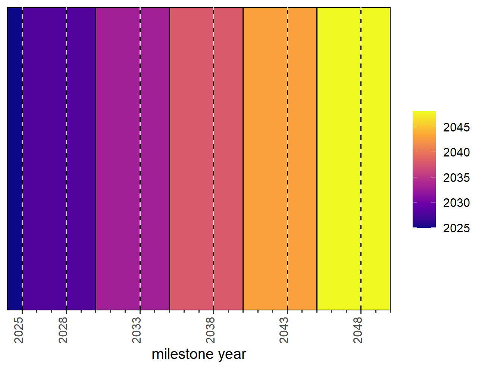
Where the milestone year sits
The same intervals, three placements of the mid-year — the dashed line:
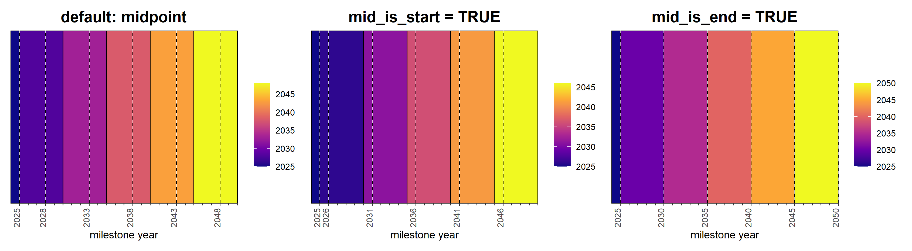
It matters because costs and demands are evaluated at the mid. mid_is_end puts the decision at the end of each period — the convention used in the models we build here. Choose once, and keep it consistent across scenarios you compare.
Ready-made horizons
[1] "Y2020_2060_by_5" "Y2020_2060_by_10" "Y2020" "Y2030"
[5] "Y2040" "Y2050" "Y2060" "Y2070" 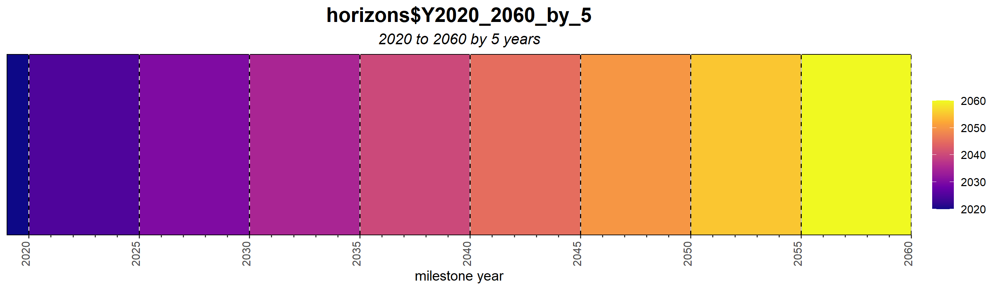
Single-year horizons (Y2030, Y2050, …) are useful for a fast structural check: build the model, solve one year, confirm it is feasible before paying for the full run.
3 · Where objects live: space
Regions
There is no newRegion(). Regions are a flat character vector declared on the model:
- Objects carry an optional
regionslot; leaving it empty means every region. tradeis the exception — it has noregion, onlysrcanddst.get_region(obj)walks any object and reports the regions it refers to. It is deliberately schema-agnostic, so it keeps working as region information is added to classes that do not carry it yet.
Geoscales: nesting regions
A geoscale (from the companion geoscales package) describes how regions nest into coarser levels, their weights, and optionally their geometry.
[1] "geoscales::Geoscale" "S7_object" The one sentence to remember
A geoscale is used for plotting, reporting and subsetting only. Attaching one never changes the optimisation model. The extra members stay inert until some commodity names a coarser level.
setGeoscale()/getGeoscale()on aconfig,modelorscenario.getData(..., geolevel = )aggregates results up the hierarchy —"finest","coarsest","all", or a named level.plot_map()draws results on the geometry (needssf).- Inter-regional flows are returned unchanged by
geolevelaggregation — summing a flow across regions would double-count it.
4 · Commodities in depth
Nine slots, and what each decides
| Slot | Decides |
|---|---|
name, desc |
identity |
limtype |
how the balance closes: LO (default, excess allowed), UP, FX |
timeframe |
where it balances in time — finest level in the model by default |
geolevel |
where it balances in space GLPK / GAMS only |
unit |
the commodity’s main unit |
emis |
emission factors carried by the fuel |
agg |
weights aggregating several commodities into this one |
misc |
free-form; never read by the model |
The commodity is deliberately lean: it is a label with balancing rules. All the engineering lives on the processes that consume and produce it.
Where a commodity lives
In time — timeframe
Electricity must balance every hour; coal only has to balance over the year. Setting ANNUAL on a carrier that genuinely needs hourly matching is one of the easiest ways to build a model that is quietly too optimistic.
Carbon and other emissions
Emission factors ride on the fuel, so every technology burning it inherits them:
The factor only fires where the consuming technology declares combustion = 1 on that input.
There is no separate carbon-content slot — @emis is the single mechanism, and it generalises to any emitted species.
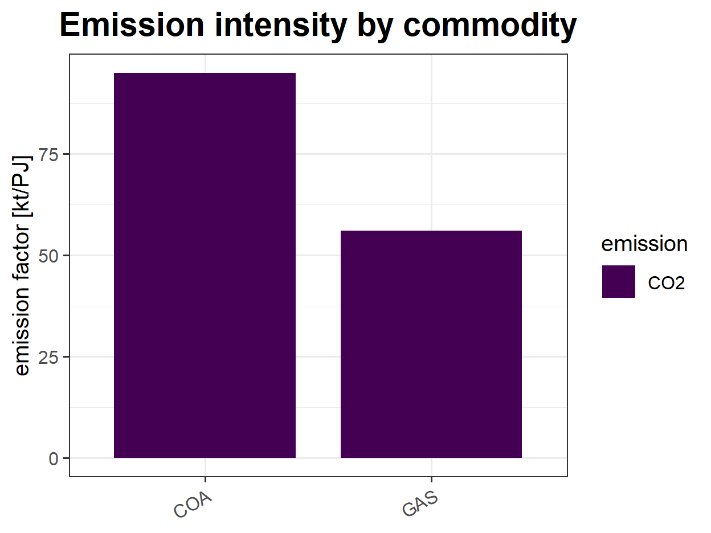
Roadmap planned
Physical properties — mass, volume, heating value — are not slots today, and @misc is the documented place to park them meanwhile. Adding them as first-class, unit-aware slots is a candidate for a future release.
Plant-specific pollutants are different
A useful contrast, since both end up as “emissions”:
| Where it lives | Mechanism | Use when |
|---|---|---|
Commodity @emis |
factor per unit of fuel burned | CO2 — depends only on the fuel’s carbon |
Technology aeff cinp2aout |
auxiliary output scaled by input | NOx, SOx — depend on the burner, not just the fuel |
Two plants burning identical coal emit identical CO2 and quite different NOx. That is the whole distinction.
5 · Vintages and clusters
One technology, many variants
Real technologies are not one thing. A wind fleet has resource grades that differ in cost and yield, and build years that differ in efficiency and lifetime. energyRt expresses both on a single object:
| Dimension | Slot | Means |
|---|---|---|
| vintage | @vintage |
when it was built — investment window and operational life |
| cluster | @cluster |
which grade or variant it is — resource quality, siting class |
@vintage replaces the older start / end / olife slots: one row per (vintage, region, cluster) giving that variant’s window and life. A single row with vintage = NA is an ordinary un-vintaged technology.
Declaring vintages
The short form is usually enough — start and end default to the vintage year, so naming the years defines properly windowed vintages:
Declaring clusters
EWINVC <- newTechnology(
name = "EWINVC",
desc = "Wind: two resource grades, two vintages",
input = list(comm = "WIN"),
output = list(comm = "ELC"),
ceff = data.frame(comm = "WIN", cinp2use = 1),
cluster = data.frame(cluster = c("best", "mid"),
desc = c("High wind sites", "Medium wind sites"),
order = 1:2),
vintage = data.frame(vintage = c("2025", "2040"), olife = 25L),
invcost = data.frame(cluster = c("best", "best", "mid", "mid"),
vintage = c("2025", "2040", "2025", "2040"),
invcost = c(1400, 1150, 1600, 1300)),
cap2act = 31.536
)Nothing new was learned. Parameters vary by variant by gaining one more selector column — exactly like region or year. 2 × 2 = 4 cells, one object.
draw() reads the whole grid
Ask for one cell and you get it, with the other vintages behind it as ghosts:
The faded stack is the vintage marginal through the selected cell — the cells sharing its cluster. Earlier vintages sit down-left, later ones up-right, so the depth of the stack is the technology’s history.
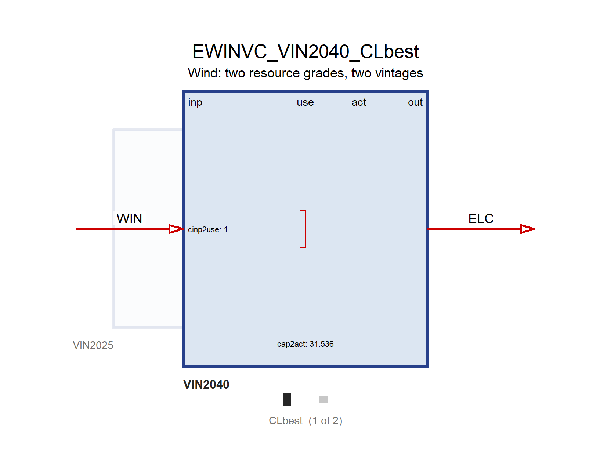
Clusters: rail, deck, or neither
cluster_style changes how the sibling grades are rendered around the selected cell.
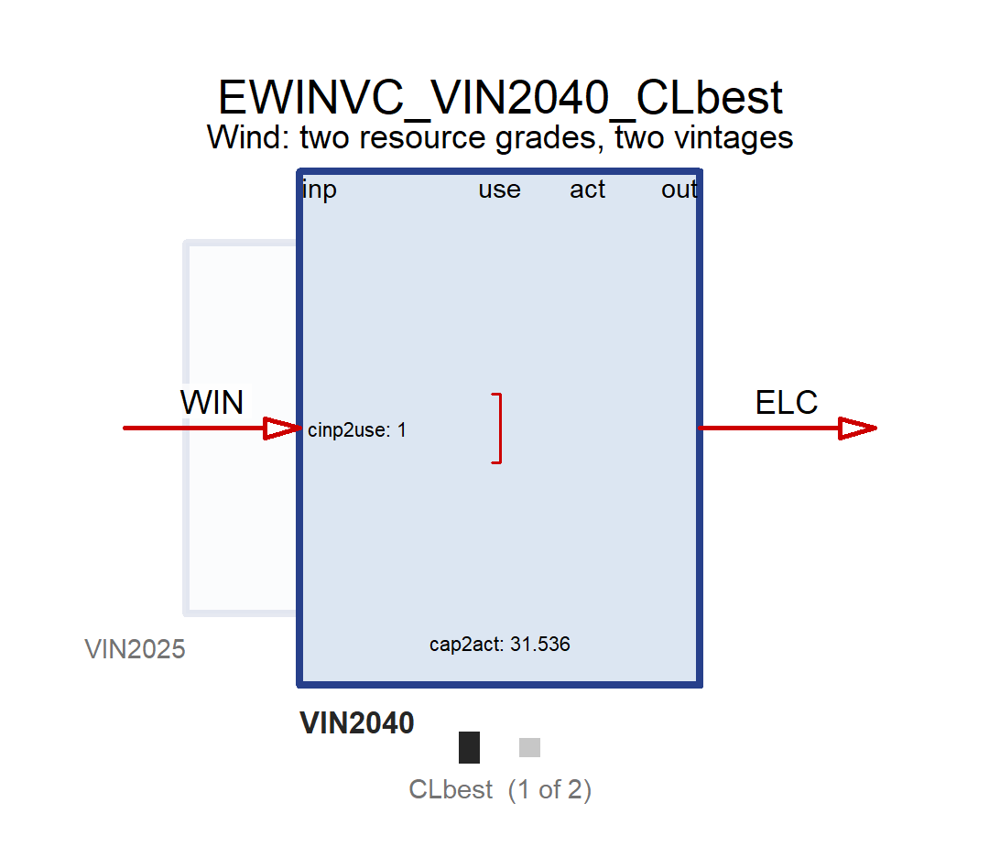
"rail" (default)
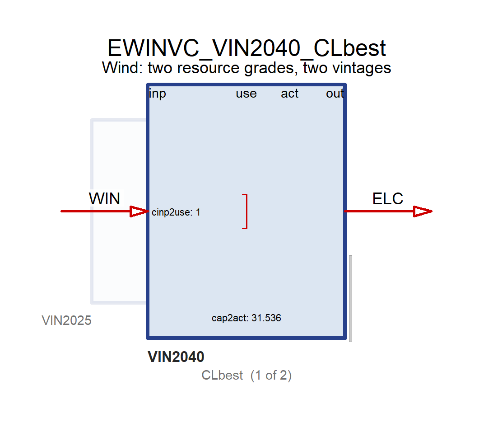
"deck"
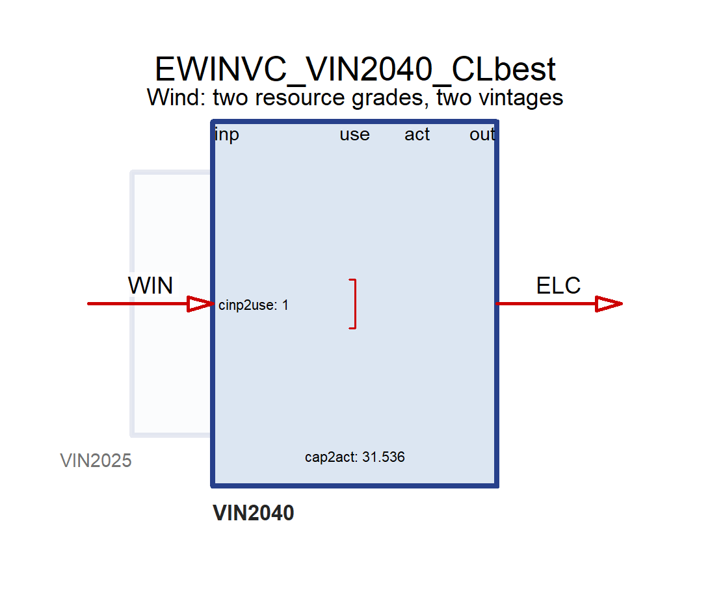
"none"
Cosmetic, not semantic — pick whichever makes the point on your slide.
Seeing every cell at once
Pass "all" to facet a dimension instead of selecting from it:
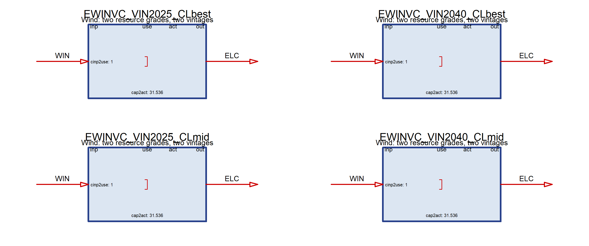
max_facets = 24L guards the obvious accident — a 4-vintage × 11-region technology asked to draw everything.
From variants to model objects
Variants are replicated into ordinary technologies before interpolation — the solver never sees the vintage/cluster idea, only more technologies.
Names gain a suffix from .variant_prefix, defaulting to _VIN and _CL: EWINVC becomes EWINVC_CLbest_VIN2025, EWINVC_CLmid_VIN2040, and so on.
design() — the object, back as code
Useful when an object came from a dataset or a colleague and you want to see what it actually says:
Returns (and can write to a file) the newTechnology() call that recreates it.
Note it renders the modern vintage table even when the object was built with the older olife = argument — a quick way to migrate old code.
technology only — no design() method for other classes yet.
ECOA <- newTechnology(
name = "ECOA",
desc = "Coal power plant",
input = data.frame(
comm = "COA",
unit = "PJ",
combustion = 1
),
output = data.frame(
comm = "ELC",
unit = "PJ"
),
ceff = data.frame(
comm = "COA",
cinp2use = 0.4
),
fixom = data.frame(
fixom = 55
),
invcost = data.frame(
invcost = 2000
),
vintage = data.frame(
olife = 30L
),
cap2act = 31.536
)6 · From description to numbers
What interpolate_model() does
The model object is a description. Interpolation compiles it into a solver-ready scenario:
- collect the sets — regions, years, slices, commodities, processes
- build the maps: membership, calendar, lifespan, value and cost domains
- extract the numeric parameters and interpolate them over years
- compute equivalent annual costs
- compile user constraints
- reduce the data (prune / fold / densify / trim — Part 8)
- validate
Only step 3 is interpolation in the literal sense. Regions and slices are handled by expanding NA wildcards — an omitted region column means all regions, and it is expanded, not interpolated.
Anchors in, series out
You supply anchor years; the pipeline fills the rest:
getData() returns both views — the given rows, and the interpolated series:
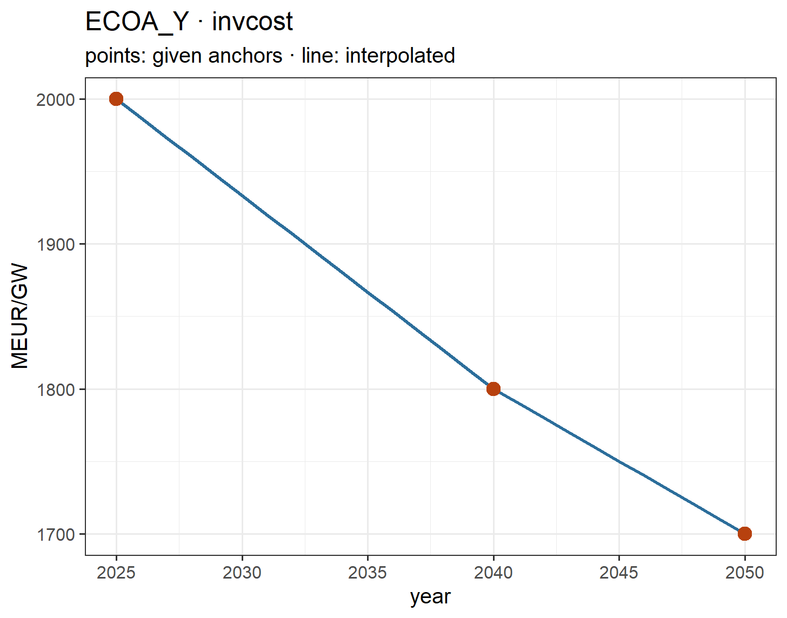
Interpolation rules
Each parameter carries a rule, stored as a composite of three tokens:
| Token | Alias | Applies |
|---|---|---|
back |
bwd |
before the first anchor — backward fill |
inter |
mid |
between anchors — linear |
forth |
fwd |
after the last anchor — forward fill |
The default nearly everywhere is back.inter.forth: constant outside the anchors, linear between them. That is why a single value with no year column becomes a flat line across the whole horizon.
Rules live in the config@interpolation table. To change them, build a modified config (or settings) and pass the object — there is no scalar interpolate_model(interpolation = ...) argument yet planned.
7 · Scenarios
A scenario is interpolated/solved model with additions
interpolate_model() accepts energyRt objects in ... and folds them into the model before the pipeline runs. That single mechanism is the whole scenario API:
| Pass an object of class | It replaces / adds |
|---|---|
calendar |
the scenario’s time structure |
horizon |
the milestone years |
config / settings |
the whole settings block |
repository |
added to the model |
technology, commodity, constraint, tax, … |
bundled into a scenario-specific repository |
Anything unrecognised is warned about, not silently ignored.
The same objects work at solve time
solve_scenario() / solve_mod() split their ...: run-control arguments stay, everything else is routed straight to interpolation.
The scenario folder name records what was swapped — {scenario}_{model}_{calendar}_{horizon} — computed from the final settings, so a substituted calendar shows up in the path:
COARSE_UTOPIA_utopia-seasons_base/Not yet planned
Swapping regions, and named scalar overrides such as interpolate_model(mod, "S", discount = 0.07). Both are TODOs in the pipeline; for now, pass a full config/settings object.
8 · Scale: data and models
How big is this model?
model_size: BASE
parameters : 128 value, 233 maps, 13 sets
param rows : 5,902
estimate : ~16,111 variables, ~16,832 constraints (from gating maps)
top parameters by rows:
pTechCinp2use 1,536
pWeather 1,004
pSliceWeight 404
pSliceAgg 400
pDemand 384model_size() counts parameter rows and estimates variables and constraints from the gating maps — enough to decide whether a run is worth starting.
Four ways to make it smaller
| Operation | What it does | Lossless? |
|---|---|---|
| prune | drops rows whose value equals the parameter’s default | yes — an absent tuple reads back as the default |
| fold | replaces a whole column with NA wildcards where the value does not vary across the entire allowed membership |
yes — reversible with unfold_* |
| trim | drops rows that no equation-domain map indexes, i.e. data the model never reads | yes |
| densify | the opposite — materialises default rows, because GAMS has no parameter default and reads an absent tuple as 0 |
n/a |
GLPK / JuMP / Pyomo only — folding writes an artificial set member (ANYREGION, ANYSLICE, …) into the model source, and the substitution is not GAMS-ready yet.
The cheapest reduction is a sampled calendar
Keep the same time structure, solve a representative subset of its slices — here every fourth hour of each season, and year_fraction records what is covered:
| scenario | calendar | slices | param_rows | variables |
|---|---|---|---|---|
| BASE | utopia_s4h24 | 96 | 5,902 | 16,111 |
| SAMPLED | utopia_s4h24_sampled | 24 | 1,614 | 4,231 |
A factor of roughly 4× in rows and variables, from one substituted object. Reduce the model before reaching for storage tricks.
Sampling vs aggregation
Two different things, and only one of them exists today:
| What it does | Status | |
|---|---|---|
| Sampling | solve a subset of the calendar’s slices; year_fraction scales annual quantities |
works — substitute a sampled calendar |
| Aggregation | roll a fine calendar’s data up onto a coarser one — reweighting profiles, load curves, availability | in development |
Passing a structurally different, coarser calendar will build a smaller model, but the fine-resolution data is not aggregated onto it — that machinery is still being written, and lands with the timescales package. Until then, sampling is the supported way to shrink the time dimension of an existing model.
Aggregation on the results side already works: getData(timeframe = ) (Part 2).
Tip
Whichever route you take, compare_interp_settings() and compare_solve_settings() rebuild the same model across a grid of fold/sparse/prune settings and check the objective is invariant — the check worth running before trusting a reduction.
Large datasets: in memory or on disk
ondisk = TRUEwrites each parameter to amodInp/folder instead of holding it in@data.save_scenario()stores data-frame slots as parquet (zstd by default) and empties the in-memory slots;isInMemory()tells you which state an object is in.
Two honest caveats
ondisk reduces peak memory during the build only — everything is materialised back into RAM before the solver files are written.
And getData() collects eagerly: the Arrow dataset is opened lazily, but filtering happens in R afterwards. There is no predicate push-down, so this is not larger-than-memory querying.
Trimming variables planned
Everything above operates on parameter rows. Removing the variables and equations those rows would have gated is a different job — an equation-graph cascade: mark empty-domain variables, untrim the ones still referenced, drop the rest.
That cascade lives in the sibling multimod package (trim_model(), mark_empty_variables(), untrim_required_elements()), and energyRt does not call it yet. A partial removal on the energyRt side would leave dangling variable references in the equations that read them — which is precisely why it is not attempted here.
Integration with multimod is in progress and is the route by which this arrives.
9 · Reading results
getData() — one accessor, many sources
Key arguments: timeframe and geolevel (aggregation, Parts 2–3), merge, process, parameters, variables, drop.zeros, asTibble.
The named list form is how many scenarios are compared — there is no need for a registry to hold them.
Mixes and comparisons
getMix() is the tidy extractor behind the scenario plot. Given a named list it row-binds with a scenario column, so any ggplot2 comparison is a facet_wrap(~ scenario) away.
autoplot() itself takes a single scenario — build multi-scenario charts from getMix().
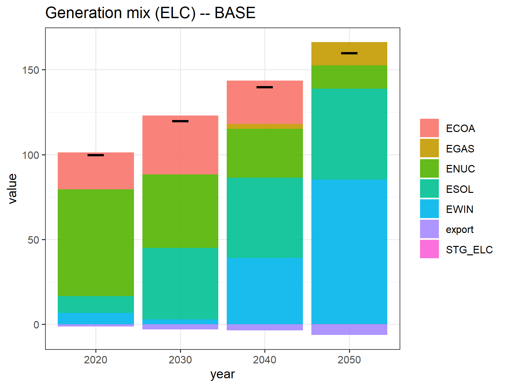
Levelized costs and reports
report()works on atechnology,repository,modelor solvedscenario.- Formats:
html,pdf,tex— it downgrades to HTML with a warning if no LaTeX engine is found. - Templates are customisable: pass the absolute path of your own
.Rmdtotemplate =. The built-ins live ininst/templates/(report_generic,report_model,report_scenario,report_vehicle).
10 · How it is solved
One solution type today
energyRt writes one linear program over all milestone years and solves it once: full perfect foresight. Every backend template contains a single solve statement.
That is a modelling assumption, not an implementation detail — the model knows the whole future when it invests. It is the right default for a least-cost benchmark and the wrong one for studying myopic behaviour.
Under development planned
Myopic · myopic with a guide or target · isolated regional solves · geo-aggregated solves · free/no-trade solves.
Also listed alongside these: coarse-time solving, which needs the aggregation machinery described in Part 8 — in development.
Time-sampled solving is the one you can already do today, by substituting a sampled calendar (Parts 2, 7 and 8).
Backends and solvers
| Backend | Needs locally |
|---|---|
| GLPK / MathProg | glpsol (ships with Rtools) |
| Julia / JuMP | Julia + HiGHS |
| Python / Pyomo | Python + CBC/HiGHS |
| GAMS | GAMS + a license |
| NEOS | nothing — an email address |
The same model object solves on any of them.
26 presets ship with the package. NEOS submits the model as inlined text, so a CPLEX solve needs no local GAMS at all — subject to its academic/non-commercial terms and a ~16 MB job cap.
Cross-solving one scenario on two backends and comparing objectives is the strongest correctness check available.
11 · Methods at a glance
What you can call on what
| Method | Returns | Defined for |
|---|---|---|
draw() |
grid schematic | technology, storage, supply, demand, import, export, trade |
autoplot() |
ggplot | 19 classes — calendar, horizon, commodity, weather, trade, demand, the processes, levcost, scenario, model, repository |
plot() |
ggplot | 17 classes — a thin delegate to autoplot() |
getData() |
tidy data | scenarios (and lists of them), models, repositories, single objects |
getObject() |
the objects | repository, model, scenario — filtered by class, name, region, … |
report() |
html / pdf / tex | technology, repository, model, scenario |
design() |
R code | technology only |
summary() / show() |
console | model, scenario, repository only |
Two things worth knowing before you go looking: there is no draw() for a model or repository — draw() describes a process, and report(mod) is what describes a whole model. And a process autoplot() needs year-indexed data in the economics or capacity slots; with none it returns NULL and says so.
The workhorses
While building
draw(obj)— is this the system I meant?design(tech)— what does this object actually say?getObject(repo, class = "technology")— what is in here?autoplot(cal),autoplot(hor)— is the time structure right?
After solving
autoplot(scen)— the mixesgetMix(list(...))— compare scenarioslevcost(scen, name =)— why did it pick that?model_size(scen)— why is this so slow?report(scen)— everything, in one document
12 · Extending
Your own constraints
The escape hatch that avoids forking the model code:
In many cases this can be done without writing constraints in the GAMS, Julia/JuMP, Python/Pyomo, or GLPK-MathProg languages.
Each left-hand-side term is a summand: a variable, a multiplier mult, and what to sum it for.sum over.
experimental — and user constraints currently compile to GAMS-dialect text; moving them to a language-neutral form so every backend renders from one definition is in progress.
The other extension points
| Want to | Use |
|---|---|
| add a relationship between variables | newConstraint() experimental |
| add a cost term to the objective | newCosts() experimental |
| change what a report shows | report(template = "/path/to/your.Rmd") |
| carry your own metadata on any object | the @misc slot — never read by the model |
| change solver behaviour | solver_options$..., or set_option() / en_config_write() |
| add a new mapping to the pipeline | the mapping registry — a contributor path: declare it in modInp.yml, write map_<Name>(), register it |
Not available yet: newVariable() planned. The variable catalogue is fixed; a runtime constructor paralleling newConstraint() is on the roadmap. (The variable class you can see is the results container, not a constructor.)
13 · Where this is going
Roadmap
Structure
- Nested regions via
geoscalesand nested time viatimescales— today both are flat sets with aggregation only on the reporting side newVariable(), to matchnewConstraint()- Language-neutral user constraints, rendered to every backend from one definition
- Physical properties on
commodity(mass, volume, heating value) - Region swapping and scalar setting overrides in scenario definition
Scale and solving
- Alternative solution types — myopic first
- multimod integration: the variable/equation trim cascade, and one shared model definition across packages
- Lazy, push-down querying of on-disk results
- Scenario registry — a working index over many saved scenarios experimental today
Most of the packages around energyRt are pre-release. If a piece of this is on your critical path, say so — that is the most useful thing you can tell us.
Recap
- Objects describe the system —
new*(), one grammar throughout - Calendars and horizons decide where those objects live in time; regions and geoscales, in space
- Vintages and clusters put many variants on one object
- Interpolation turns anchors into a full grid
- Scenarios are the same model with objects substituted
- Scale is managed first by sampling the calendar, then by pruning, folding and trimming its data
- Results come back tidy —
getData(),autoplot(),levcost(),report()
When in doubt, draw() it — and when the model is slow, model_size() it.
energyRt · useR! Training